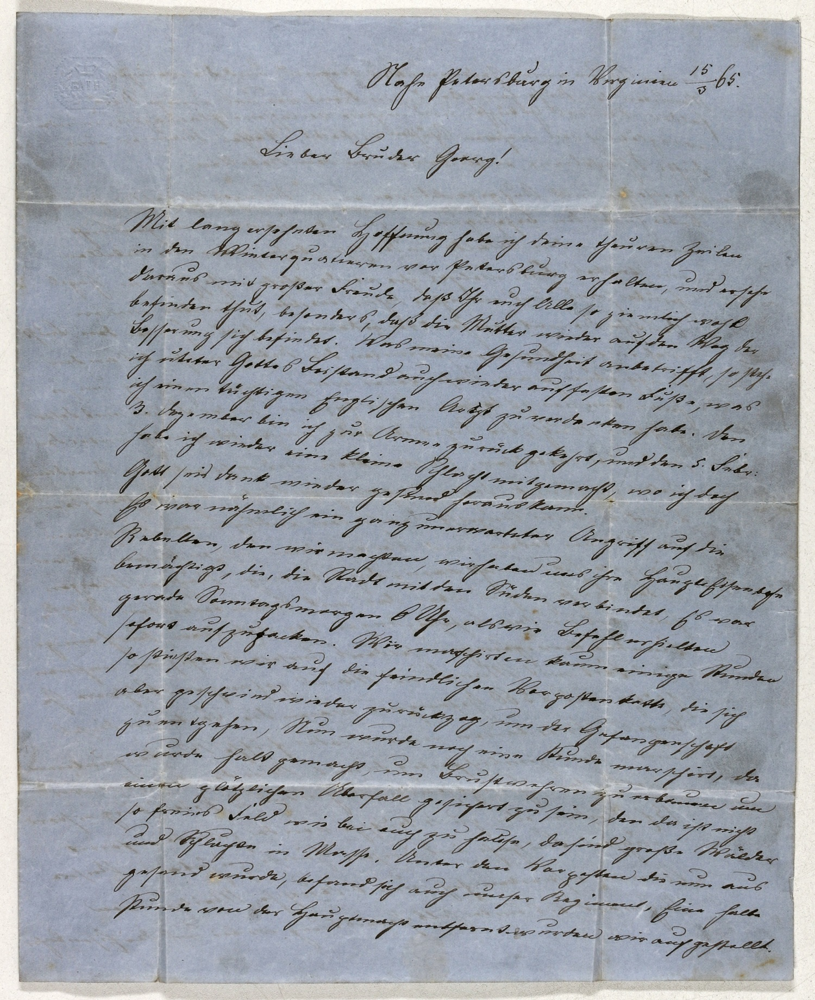

StA Coburg, Nachlass E. Lorenz, 352



Kommentar
Editor: magdalena.weileder@textgrid.de
Archiv: StA Coburg
Bestand: Nachlass E. Lorenz
Signatur: 352
Ort: Petersburg, Virginia (USA
Datum: 1865 März 15
Schlagwort: Privatbrief
Schwierigkeitsgrad: leicht
Kurzbetreff:
Privatbrief eines Soldaten im amerikanischen Bürgerkrieg
Privatbrief eines Soldaten im amerikanischen Bürgerkrieg
Schreiberhände:
- (S1)
Kommentar:
Der Brief eines Soldat im Amerikanischen Bürgerkrieg aus Petersburg/Virginia ist auf blauem Papier in Kurrent geschrieben. Er enthält einige Rechtschreib- oder Kasusfehler (häufig n statt m am Wortende, z.B. Z. 6: den, Z. 9: einen).
Der Brief eines Soldat im Amerikanischen Bürgerkrieg aus Petersburg/Virginia ist auf blauem Papier in Kurrent geschrieben. Er enthält einige Rechtschreib- oder Kasusfehler (häufig n statt m am Wortende, z.B. Z. 6: den, Z. 9: einen).
Entzifferung
(Absatz Beginn)
1 Nahe Petersburg in Virginien 15/3 65.
2 Lieber Bruder Georg!
3 Mit lang ersehnter Hoffnung habe ich deine theuren Zeilen
4 in den Winterquartieren vor Petersburg erhalten, und ersehe
5 daraus mit großer Freude, daß Ihr euch Alle so ziemlich wohl
6 befinden thut, besonders, daß die Mutter wieder auf den Weg der
7 Besserung sich befindet. Was meine Gesundheit anbetrifft, so stehe
8 ich untera) Gottes Beistand auch wieder auf festen Fuße, was
9 ich einen tüchtigen Englischen Artzt zu verdanken habe. Den
10 3. Dezember bin ich zur Armee zurückgekehrt, und den 5. Febr(uar)
11 habe ich wieder eine kleine Schlacht mitgemacht, wo ich doch
12 Gott seis dank wieder gesund heraus kamb).
13 Es war nähmlich ein ganz unerwarteter Angriff auf die
14 Rebellen, den wir machten, wir haben uns ihre Haupt-Eisenbahn
15 bemächtigt, die, die Stadt mit den Süden verbindet, Es war
16 gerade Sonntagsmorgen 6 Uhr, als wir Befehl erhielten
17 sofort aufzupacken. Wir marschirten kaum einige Stunden
18 so stießen wir auf die feindlichen Vorpostenkette, die sich
19 aber geschwind wieder zurückzog, um der Gefangenschaft
20 zu entgehen, Nun wurde noch eine Stunde marschirt, da
21 wurde halt gemacht, um Brustwehren zu erbauen um
22 einen plötzlichen Uberfall gesichert zu sein, den da ist nicht
23 so freies Feld wie bei euch zu hause, da sind große Wälder
24 und Schluchtn in Masse. Unter den Vorposten die nun aus
25 gesand wurde, befand sich auch unser Regiment, Eine halbe
26 Stunde von der Hauptmacht entfernt wurden wir aufgestellt.
(Absatz Ende)
a) ursprünglich "uteter"(Textzitat), gebessert zu "unter"(Textzitat)
b) nach dem "m"(Textzitat) folgt noch ein halber, vermutlich aus Versehen gesetzter Schaft
Transkription
(Absatz Beginn)
1 Nahe Petersburg in Virginien, 15.3.[18]65.
2 Lieber Bruder Georg!
3 Mit lang ersehnter Hoffnung habe ich Deine theuren Zeilen
4 in den Winterquartieren vor Petersburg erhalten, und ersehe
5 daraus mit großer Freude, daß Ihr euch alle so ziemlich wohl
6 befinden thut, besonders, daß die Mutter wieder auf den Weg der
7 Besserung sich befindet. Was meine Gesundheit anbetrifft, so stehe
8 ich untera) Gottes Beistand auch wieder auf festen Fuße, was
9 ich einen tüchtigen Englischen Artzt zu verdanken habe. Den
10 2. Dezember bin ich zur Armee zurückgekehrt, und den 5. Februar
11 habe ich wieder eine kleine Schlacht mitgemacht, wo ich doch,
12 Gott seis Dank, wieder gesund heraus kamb).
13 Es war nähmlich ein ganz unerwarteter Angriff auf die
14 Rebellen, den wir machten, wir haben uns ihre Haupteisenbahn
15 bemächtigt, die die Stadt mit den Süden verbindet. Es war
16 gerade Sonntagsmorgen 6 Uhr, als wir Befehl erhielten
17 sofort aufzupacken. Wir marschirten kaum einige Stunden,
18 so stießen wir auf die feindlichen Vorpostenkette, die sich
19 aber geschwind wieder zurückzog, um der Gefangenschaft
20 zu entgehen. Nun wurde noch eine Stunde marschirt, da
21 wurde halt gemacht, um Brustwehren zu erbauen um
22 einen plötzlichen Uberfall gesichert zu sein, den da ist nicht
23 so freies Feld wie bei euch zu hause, da sind große Wälder
24 und Schluchtn in Masse. Unter den Vorposten, die nun aus-
25 gesand wurde, befand sich auch unser Regiment. Eine halbe
26 Stunde von der Hauptmacht entfernt wurden wir aufgestellt.
(Absatz Ende)
a) ursprünglich "uteter"(Textzitat), gebessert zu "unter"(Textzitat)
b) nach dem "m"(Textzitat) folgt noch ein halber, vermutlich aus Versehen gesetzter Schaft